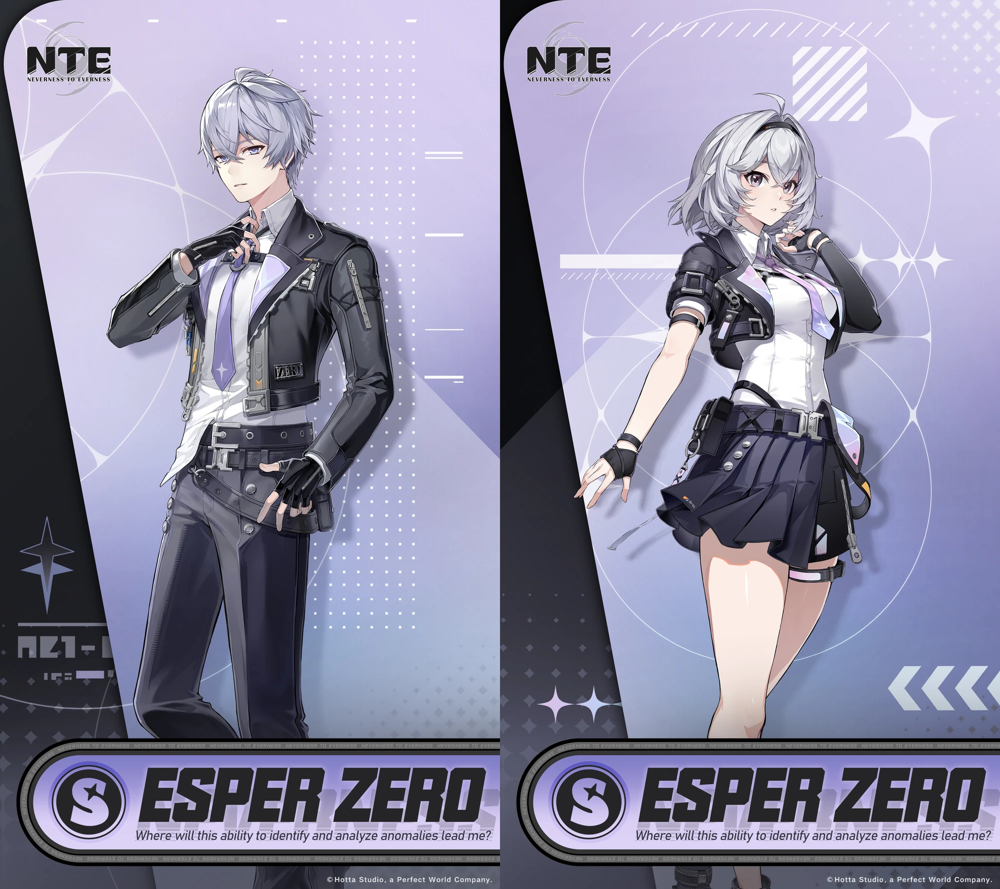
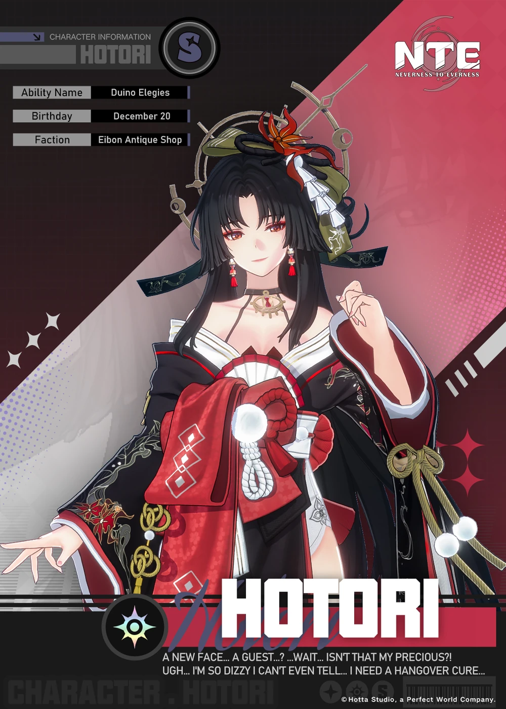
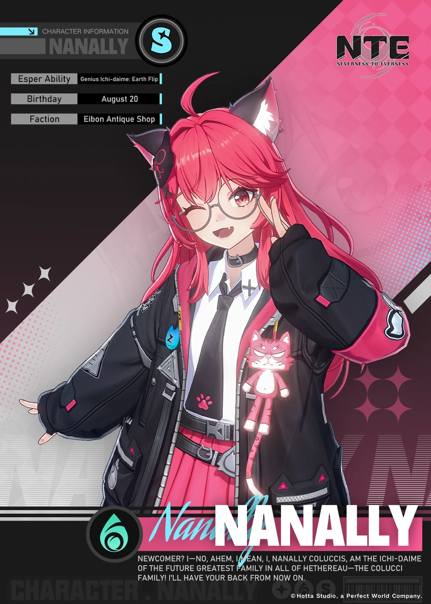
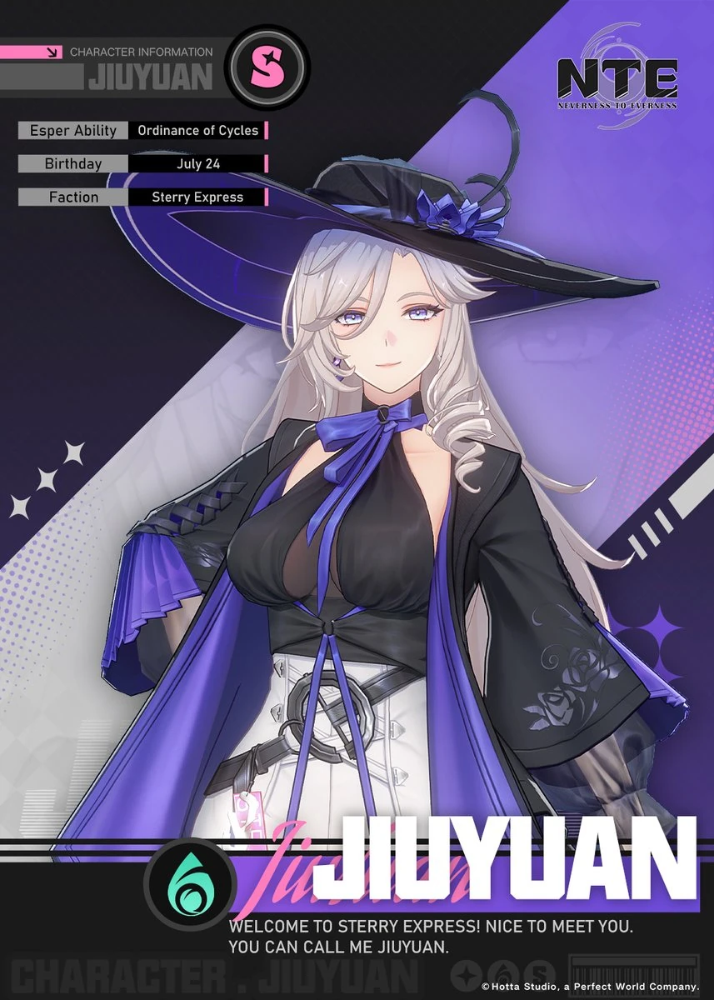

Personajes principales
Esper Zero

Esper Zero es el personaje principal del juego Neverness to Everness. El único esper de la historia sin un índice de Wertheimer detectable.
¿Adónde me llevará esta capacidad para identificar y analizar anomalías?
Despertó antes de los eventos del juego, lo que permite al jugador elegir entre Esper Zero masculino o Esper Zero femenino desde el principio.
Hotori

Hotori es un personaje jugable de la clase Cosmos en Neverness to Everness.
La jefa de Eibon, que no parece estar muy sobria.
Nanally

Nanally es un personaje jugable de la clase Ánima en Neverness to Everness.
¡La Fundadora de los Colucci está buscando nuevos reclutas!
¡Hmm?! Algo no se siente del todo bien. ¡Hora de moverse!
¡Di hola a la Fundadora de la Familia Colucci!
¡Así es como hago mi entrada!
¿Te sientes mareado? ¡Estarás bien!
Jiuyuan

Jiuyuan es un personaje jugable de la clase Ánima en Neverness to Everness.
La codicia te hará hundirte aún más en el fango.
Eres inteligente. Confío en que sabes cómo tomar la decisión correcta.
Perito, qué sorpresa verte a esta hora.
Ahora que has entrado en mi dominio, tendrás que jugar según mis reglas.
Para empezar... toma un sorbo de mi colección de vinos invaluables.